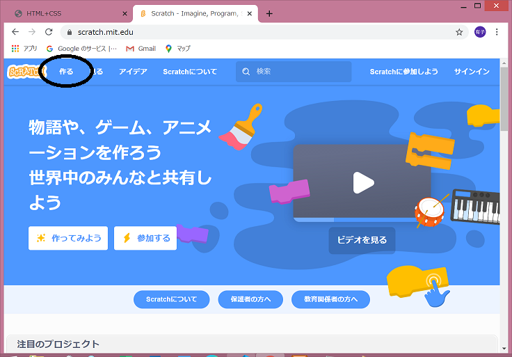
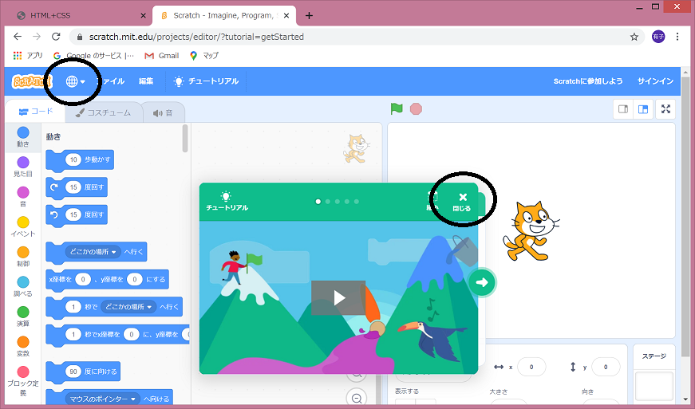
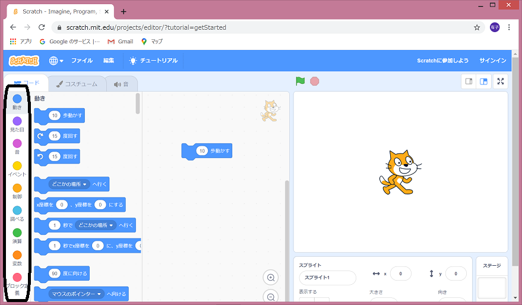
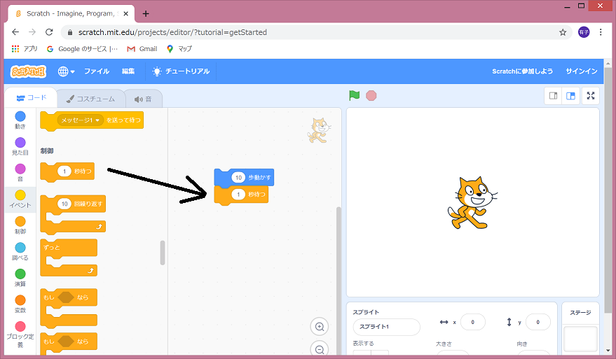
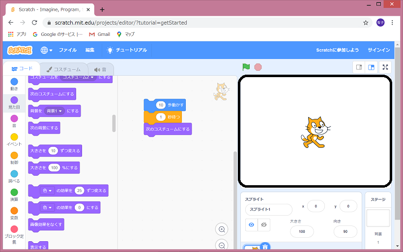

Scratch
ブラウザ上で試してみよう
scratchのホームページはscratch.mit.eduです。scatchはインターネットブラウザ上でも、ソフトをダウンロードしてもどちらでも使えます。インターネットブラウザ上で行う場合、ユーザー登録を行うと、作品の保存や公開ができます。作るから早速試してみましょう。
真ん中の説明はとりあえず消します。日本語になっていない場合はで日本語を選択しましょう。
では、キャラクターの猫を動かしてみましょう。
コードの10歩動かすをドラッグ&ドロップで隣のエリアに移しましょう。
オレンジの制御をクリックすると、オレンジのブロックが表示されます。
今度は1秒待つを青いブロックの下につけます。同じように見た目から次のコスチュームにするをつなげます。ブロックをはずしたいときはドラッグ&ドロップでコードのほうに戻します。
作ったブロックのかたまりをクリックすると、右のエリアのキャラクターが動きます。少し右に動いて足の形が変わりましたね。
右下の背景、スプライトの画面から、背景やキャラクターを追加することができます。
色々なブロックがあるのでまずいろいろ動かして試してみてください。スプライト(キャラクター)の最初の位置はドラッグで直接移動できます。動きに慣れたら、イベントのブロックを、動きのブロックの最初につなげて、何かが起こった時に動作がスタートするように設定してみてください。
他のスプライトの動きに連動して動きを設定することもできます。右下からスプライトを切り替えて、猫とリンゴに次のような設定をしてみましょう。そしてをクリックしてみましょう。猫の動きが終わったらリンゴが動きだしましたね。
Scratchのホームページ上では自分の作品を公開したり、他の人が公開している作品をみるたり、その作り方を見ることもできます。本もたくさん出ています。
無料の学習サイトを活用しよう

無料でレッスンが公開されています。実際の操作を動画で見ながら学べます。動画を視聴するだけなら会員登録せずに見ることができます。scratchで簡単なゲームを作るレッスンが紹介されています。